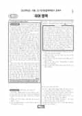

문제지

전국연합학력평가 · 시·도교육청 주관
2023년 10월 고3 학력평가 국어 언어와매체 1등급컷은 원점수 97점(추정), 표준점수 최고점은 128점입니다.
원점수 1등급컷은 공식 발표값이 아니라 EBSi·입시기관 값입니다. 등급별 값은 등급컷 표, 출처 구분은 데이터 원칙에 있습니다.

시험지를 먼저 풀어 보세요. 등급컷·표준점수·난이도는 흐리게 가려 뒀어요.
| 등급 | 원점수 | 표준점수 | 백분위 |
|---|---|---|---|
| 1 | 97 | 126 | 96 |
| 2 | 91 | 122 | 88 |
| 3 | 85 | 117 | 75 |
| 4 | 76 | 110 | 59 |
| 5 | 61 | 99 | 39 |
| 6 | 36 | 80 | 22 |
| 7 | 21 | 69 | 11 |
| 8 | 13 | 66 | 5 |
등급별 컷 · 입시기관 3곳 원점수 추정 종합(이투스·종로학원·대성마이맥) · 공통+선택 점수 조합에 따라 다를 수 있음 · 만점 100점
| 등급 | 표준점수 이상 | 인원(명) | 비율 |
|---|---|---|---|
| 1 | 126 | 11,455 | 4.81% |
| 2 | 122 | 19,889 | 8.36% |
| 3 | 117 | 29,651 | 12.46% |
| 4 | 110 | 39,228 | 16.49% |
| 5 | 99 | 44,557 | 18.73% |
| 6 | 80 | 39,988 | 16.81% |
| 7 | 69 | 28,686 | 12.06% |
| 8 | 66 | 15,929 | 6.69% |
| 9 | 52 | 8,556 | 3.6% |
국어 영역 전체 응시자 기준이에요.
출처: 시·도교육청이 공개한 전국연합학력평가 성적 분석·통계자료(공개 자료 보기).
EBSi 응답자 기준으로 가장 많이 틀린 문항은 31번(2점)이고, 오답률은 62.6%입니다. 오답률 50%를 넘은 문항은 4개입니다.
| 순위 | 문항 | 배점 | 오답률 | 정답 | 많이 고른 오답 |
|---|---|---|---|---|---|
| 1 | 31번 | 2점 | 62.6% | ① | ② 19.3% |
| 2 | 6번 | 3점 | 59.1% | ⑤ | ③ 29.6% |
| 3 | 7번 | 2점 | 57.4% | ① | ③ 25.4% |
| 4 | 5번 | 2점 | 53% | ② | ④ 22.1% |
| 5 | 10번 | 3점 | 45.8% | ⑤ | ④ 18% |
| 6 | 15번 | 3점 | 32.9% | ③ | ④ 14.9% |
| 7 | 35번 | 3점 | 32.6% | ③ | ④ 13.9% |
| 8 | 16번 | 2점 | 28.9% | ② | ③ 11.6% |
| 9 | 14번 | 2점 | 28.2% | ① | ④ 8.9% |
| 10 | 36번 | 2점 | 27.1% | ② | ③ 7.2% |
| 11 | 34번 | 3점 | 25.8% | ⑤ | ④ 9.1% |
| 12 | 32번 | 2점 | 24.6% | ③ | ① 8.5% |
| 13 | 21번 | 2점 | 24.2% | ④ | ③ 8.1% |
| 14 | 2번 | 3점 | 23.4% | ② | ⑤ 9.3% |
| 15 | 33번 | 2점 | 23.2% | ③ | ④ 9.2% |
EBSi 가채점 응답자 기준 · 전 문항 중 오답률 상위 15문항
출처: EBSi 역대 등급컷·오답률 공개 화면. 가채점에 참여한 EBSi 이용자 응답이라 전체 응시자 정답률과는 다를 수 있습니다.
발행 기관: 시·도교육청(전국연합학력평가). 파일 위치: 이 사이트가 보관한 사본. 저작권은 발행 기관에 있습니다. 원본과 다르거나 게시 중단이 필요하면 연락처로 알려 주세요. 등급컷 출처 구분은 데이터 원칙에서 설명합니다.
막대 색은 역대 대비 난이도 · 진한 막대가 이 시험 · 막대를 누르면 그 회차로 이동
| 회차 | 1등급컷 | 표점 최고 | 1등급 표점 | 난이도 |
|---|---|---|---|---|
| 10월 학평2023년 고3이 시험 | 97 | 128 | 126 | 매우 쉬움 |
| 7월 학평2023년 고3 | 88 | 141 | 132 | 어려움 |
| 4월 학평2023년 고3 | 93 | 137 | 130 | 쉬움 |
| 3월 학평2023년 고3 | 87 | 146 | 133 | 보통 |
| 10월 학평2022년 고3 | 86 | 141 | 129 | 어려움 |
| 7월 학평2022년 고3 | 93 | 134 | 129 | 쉬움 |
| 4월 학평2022년 고3 | 94 | 135 | 130 | 매우 쉬움 |
| 3월 학평2022년 고3 | 88 | 144 | 132 | 보통 |
| 10월 학평2021년 고3 | 91 | 138 | 130 | 쉬움 |
| 7월 학평2021년 고3 | 83 | 148 | 132 | 매우 어려움 |
공통과목 독서는 주제 통합적 독서를 다룬 독서론(1~3번), 구면 렌즈의 굴절력과 눈의 굴절 이상(근시·원시)을 다룬 과학 지문(4~7번), 법 규칙의 적용 범위가 분명하지 않은 사례에서의 법 해석을 다룬 법 지문(8~11번), (가) 미적 속성이 대상에 실재하는지에 관한 논쟁과 (나) 도덕적 속성과 비도덕적 속성의 관계를 설명하는 수반론을 묶은 주제 통합형 인문 지문(12~17번)으로 구성되었습니다.
오답률 50%를 넘은 독서 문항 3개가 모두 굴절력 지문에서 나왔습니다. 굴절력이 +57D인 비정시의 눈을 다룬 <보기> 문항 6번(3점, 59.1%), 원시와 근시를 유도하는 이유를 묻는 7번(57.4%), 굴절력과 초점 거리의 관계를 묻는 5번(53.0%)이 차례로 어려웠습니다. 박물관에서 약을 먹은 사례를 다룬 법 지문의 10번(45.8%)이 그다음이었습니다.
문학은 이진유 「속사미인곡」·이복길 「오련가」와 박지원의 「답홍덕보서 제이」를 묶은 갈래 복합(18~23번), 윤동주 「간」과 문정희 「신라의 무명 시인 지귀」를 묶은 현대시(24~26번), 이동하의 소설 「홍소」(27~30번), 작자 미상의 고전소설 「숙녀지기」(31~34번)로 구성되었습니다.
이 회차 국어에서 가장 많이 틀린 31번(2점, 62.6%)은 화 소저와 여 소저의 대화를 중심으로 「숙녀지기」의 내용을 이해하는 문항이었습니다. 문학의 나머지 문항은 오답률이 모두 40%를 밑돌았습니다.
언어와 매체도 오답률 50%를 넘은 문항이 없었습니다. 의존 명사와 결합하는 선행 요소의 유형을 다룬 문법 지문의 35번(3점, 32.6%)이 가장 많이 틀린 선택 문항이었고, 음운 변동의 유형(교체·탈락·첨가·축약)을 다룬 37번, 어근과 접사로 단어 구성을 따지는 38번, 안긴문장을 다룬 39번이 출제되었습니다.
매체는 마을을 탐방하는 실시간 인터넷 방송 '뚜벅뚜벅 마을 여행'과 이를 시청한 학생의 메모를 다루었습니다.
최고점자가 4천 명 가까이 나올 만큼 쉬운 회차였기 때문에, 굴절력 지문처럼 수치가 들어간 과학 지문 한 세트에서 점수가 갈렸습니다. 렌즈의 굴절력(D)과 초점 거리의 역수 관계처럼 지문이 정의한 식을 <보기>의 수치에 직접 대입해 보는 연습이 효과적입니다.